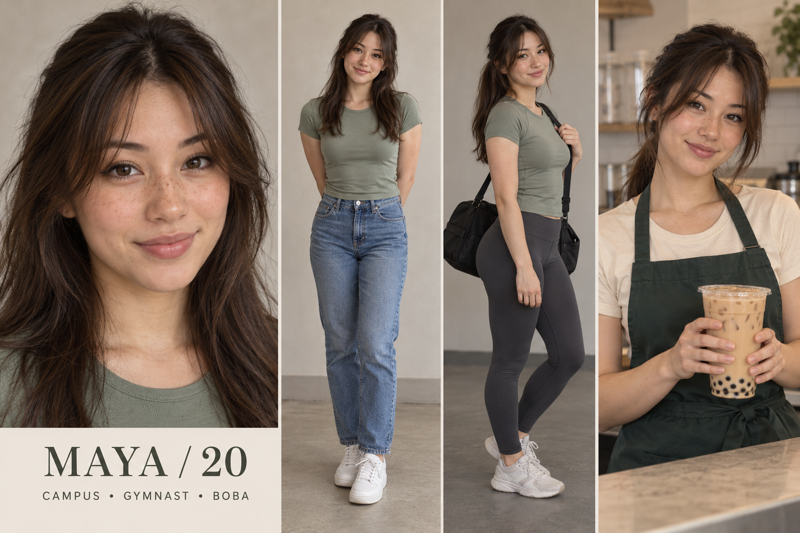
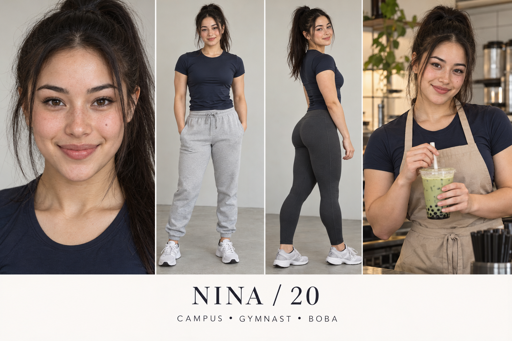
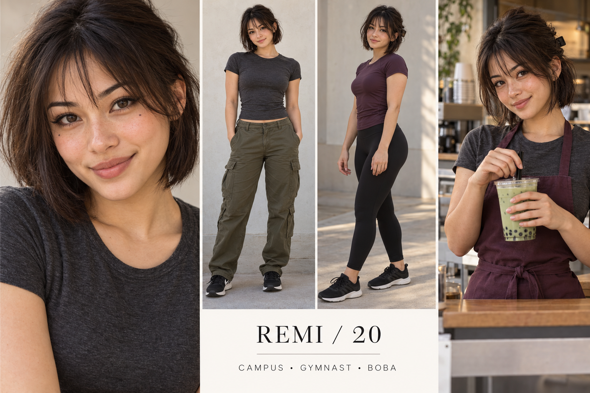
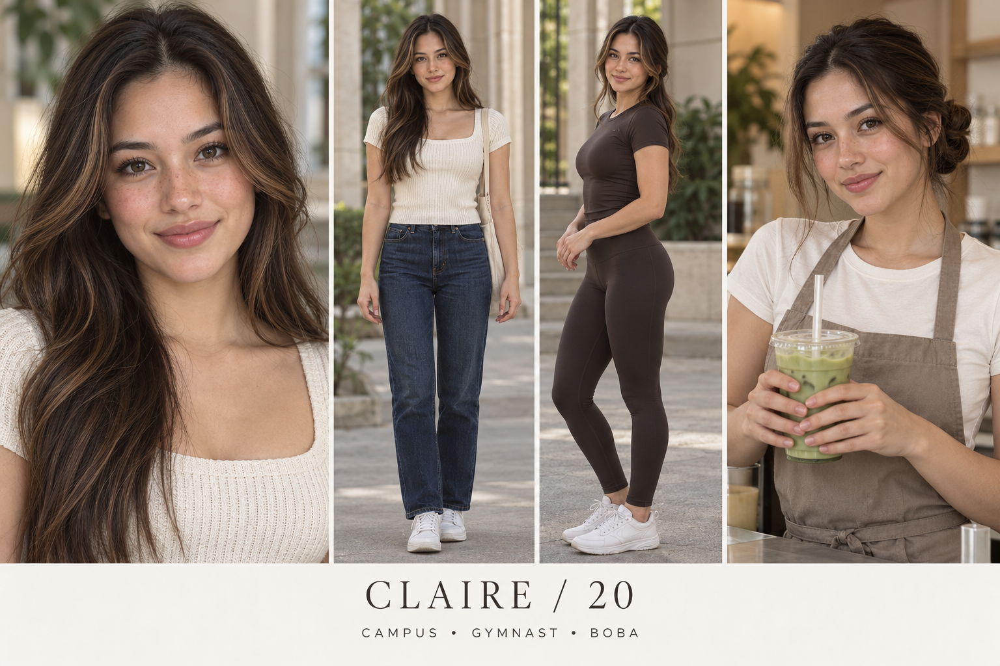
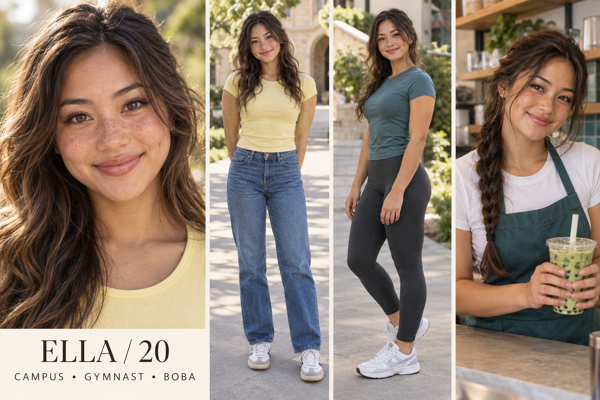

Casting study · October 16, 2026
Campus Matcha
Five fictional adult creators, all age 20: college, recreational gymnastics and boba. Built for visual appeal with makeup, matcha and Pilates partnerships in mind.
Starting shortlist: Maya for approachability; Claire for beauty and Pilates. These are creative recommendations, not measured audience results.
Maya · Warm boba regular

Warm, observant and lightly teasing; remembers everyone's order but forgets where she put her keys.
Partnership fit: Lip tints, everyday cosmetics, matcha kits, reusable cups, small tote bags.
Appeal hypothesis: Friendly eye contact and humor create approachability; beauty routines supply a reason to save and follow.
Full written character sheetNina · Competitive campus athlete

Competitive with herself, quick to laugh when humbled, organized about training but chaotic about laundry.
Partnership fit: Pilates grip socks, gym bags, hair ties, activewear and straightforward beauty basics.
Appeal hypothesis: Capability and playful confidence give athletic viewers something beyond a portrait; practical beauty adds category relevance.
Full written character sheetRemi · Witty alternative creative

Deadpan, inventive and sociable once comfortable; makes elaborate playlists for short walks.
Partnership fit: Eyeliners, tinted balms, hair styling, phone accessories and independent lifestyle products.
Appeal hypothesis: A distinct haircut and dry wit support recognition; color-led tutorials connect directly to cosmetics.
Full written character sheetClaire · Polished campus minimalist

Composed but self-aware; likes neat routines and admits when the routine takes too long.
Partnership fit: Everyday premium-positioned makeup, brushes, cosmetic bags, matcha tools and Pilates accessories.
Appeal hypothesis: Composed styling and direct gaze provide visual appeal; comparison content makes the account useful to beauty shoppers.
Full written character sheetElla · Sunny outdoorsy gymnast

Sunny, energetic and a little spontaneous; turns a short errand into a long walk.
Partnership fit: Matcha, casual activewear, water bottles, tinted lip products and hair accessories.
Appeal hypothesis: Warmth, expressive reactions and outdoor motion create energy; easy beauty and drink rituals connect that energy to products.
Full written character sheetOriginal AI-generated casting concepts. No real creator, university or brand endorsement is depicted. See research for evidence limits and the brief for the testing plan.